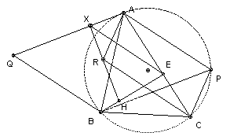
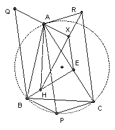
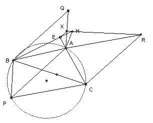

ABC is a triangle with orthocenter H. P is a point on the circumcircle (distinct from the vertices). BE is an altitude. Q is the intersection of the line through A parallel to PB and the line through B parallel to AP. R is the intersection of the line through A parallel to PC and the line through C parallel to PA. The lines HR and AQ meet at X. Show that EX is parallel to AP.
Solution

Angle APB = C or 180o - C (A, B, C, P lie on circle). Also angle XAP = angle APB or 180o - angle APB. So angle XAP = C or 180o - C. But angle AHE = 90o - angle HAE = C, so angle XAP = angle AHE or 180o - angle AHE.
Angle ARC = angle APC (parallelogram) = B or 180o - B. Also angle AHC = 180o - angle HAC - angle HCA = 180o - (90o - C) - (90o - A) = A + C = 180o - B. So angle ARC = angle AHC or 180o - AHC. Hence A, H, R, C lie on a circle. Hence angle AHR = angle ACR or 180o - angle ACR = angle CAP or 180o - angle CAP (parallelogram again).
At this point we get into something of a mess. We would like to argue as follows. Angle XAE = angle XAP - angle CAP = angle AHE - angle AHR = angle XHE. Hence X, A, H, E lie on a circle. Hence angle AEX = angle AHX or 180o - angle AHX. Then angle AHX = angle AHR = angle CAP or 180o - angle CAP, so angle AEX = angle CAP or 180o - angle CAP. Hence EX and AP are parallel.
However, it is also possible that angle XAE = angle XAP + angle CAP - 180o. So there are 8 cases to look at: 2 possibilities for AHR and CAP, 2 possibilities for XAP and AHE, and 2 possibilities for XAE. Some of these work and others do not. Presumably the ones which do not work cannot occur.
Ideas anyone? Alternatively, one might try vectors. There are plenty of perpendicular lines. For example, HR and AQ are perpendicular.

(C) John Scholes
jscholes@kalva.demon.co.uk
16 Dec 2002